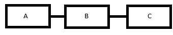

Una actividad está compuesta por dos o más tareas, a la vez que un proceso está compuesto por dos o más actividades. La interacción entre estas actividades es la que determina el desempeño del proceso, por cual para mejorar un proceso o para solucionar un problema específico, es necesario explicar el proceso. Es ahí cuando entra el término que veremos "Diagramas de flujo".
Qué es un diagrama de flujo
¿Y qué es? También llamado flujograma, el diagrama de flujo nos permite
por medio de bloques, describir gráficamente un proceso,
detallando en él, flujo de información, clientes, equipo o materiales.El concepto de diagrama de flujo también se toca desde el ámbito informático, más específicamente desde la programación. Se realizan diagramas de flujo para analizar las instrucciones que se le dan a la maquina.
En este caso, hablaremos de diagrama de flujo desde el ámbito de las operaciones de la empresa.
Teniendo claro qué es un diagrama de flujo, vamos a ver su simbología.
Simbología de un diagrama de flujo
Hay muchas formas para representar las actividades en un flujograma (mencionaré constantemente los términos con los que se suele conocer al diagrama de flujo para facilitar al lector el aprendizaje).
La más básica de todas es hacerlo con rectángulos, figurando dentro de este una descripción de la actividad.

Otra de las formas, es la de la Sociedad americana de ingenieros mecánicos o ASME. Generalmente es usada por los ingenieros industriales para hacer cursogramas, no obstante es perfecta para lograr diagramas de flujo. Por último, esta es la simbología más común para hacer un diagrama de flujo.

Cómo Hacer un Diagrama de Flujo
Normalmente para realizar un diagrama de flujo primero se hace lo que se llama el algoritmo. Un algoritmo es una secuencia de PASOS LÓGICOS a seguir para resolver un problema de forma escrita. Un ejemplo para cocinar un huevo para otra persona sería:
Si te fijas los pasos no pueden cambiar su posición. Sería imposible preguntarle si lo quiere frito después de haberlo hervido, por ejemplo. Es muy importante que los pasos sean una secuencia lógica y ordenada. Ahora que ya sabemos todos los pasos, mediante el algoritmo, podemos hacer un esquema con estos pasos a seguir. Este esquema será el Diagrama de Flujo.

Si uno tiene experiencia puede prescindir del algoritmo escrito pero siempre tendremos que tenerlo en mente para hacer el diagrama de flujo sin equivocarnos.
¿Para qué se Usan los Diagramas de Flujo?
Se usan para hacer un programa informático, para analizar lo que tiene que hacer un robot, en los procesos industriales, etc. Un diagrama de flujo es útil en todo aquello que se necesite una previa organización antes de su desarrollo. En la realización de un programa informático es imprescindible primero realizar el diagrama de flujo, independientemente del lenguaje de programación que usemos después. Una vez que tenemos nuestro diagrama de flujo solo tendremos que conocer las órdenes del lenguaje que realizan esas tareas que se especifican en el diagrama.
Reglas y Símbolos Para la Construcción de un Diagrama de Flujo
Ejercicio:
Diagrama de Flujo para sumar 100 números leídos por teclado.
Phone
(+52) 961-667-7769Direccion
96890 La cuevita #132, Tuxtla Guttierez
Chiapas, Mexico